Maida User Manual Maida ユーザーマニュアル Maida 使用手冊 Maida 使用手册
Version: v0.4.3 バージョン：v0.4.3 版本：v0.4.3 版本：v0.4.3
Maida shows you one game at a time from your Steam library. You answer: play it now, or see something else. Maida はあなたの Steam ライブラリから一度に 1 つのゲームを表示します。あなたが決めます：今プレイするか、別のものを見るか。 Maida 從你的 Steam 遊戲庫中，每次只顯示一款遊戲。你來決定：現在玩，或者看看別的。 Maida 从你的 Steam 游戏库中，每次只显示一款游戏。你来决定：现在玩，或者看看别的。
What is this?これは何ですか？這是什麼？这是什么？
Maida has two faces:Maida には 2 つの面があります：Maida 有兩個面：Maida 有两个面：
- Rin臨（Rin）臨（Rin）临（Rin） — fast decision. A dice roll shows one game; you choose TRY or Not Now. ：即時の決断。ダイスが 1 つのゲームを出し、「やる」か「パス」かを選びます。 ：快速決策。骰子轉出一款遊戲，你選擇試試或現在不要。 ：快速决策。骰子转出一款游戏，你选择试试或现在不要。
- Kamae構（Kamae）構（Kamae）构（Kamae） — curation. Manage your showcase and decide which games enter the dice pool. ：キュレーション。ショーケースを管理し、ダイスプールに入るゲームを決めます。 ：策展管理。整理你的展示櫃，決定哪些遊戲進入骰子池。 ：策展管理。整理你的展示柜，决定哪些游戏进入骰子池。
First time setup初回セットアップ首次設定首次设置
- Make sure Steam is runningSteam が起動していることを確認確保 Steam 正在執行确保 Steam 正在运行
- Open MaidaMaida を開く開啟 Maida打开 Maida
- Click "Scan my Steam library"「Steam ライブラリをスキャン」をクリック點擊「掃描 Steam 遊戲庫」点击「扫描 Steam 游戏库」
- Wait for the scan to complete (no data leaves your device)スキャン完了を待つ（データはデバイスの外に出ません）等待掃描完成（資料不會離開你的裝置）等待扫描完成（数据不会离开你的设备）
- Done — Maida creates a "Demo Kata" with 3 random games to get you started完了 — Maida がランダムな 3 つのゲームで「デモ型」を作成します完成 — Maida 會用 3 款隨機遊戲建立「示範型」讓你開始完成 — Maida 会用 3 款随机游戏创建「示范型」让你开始
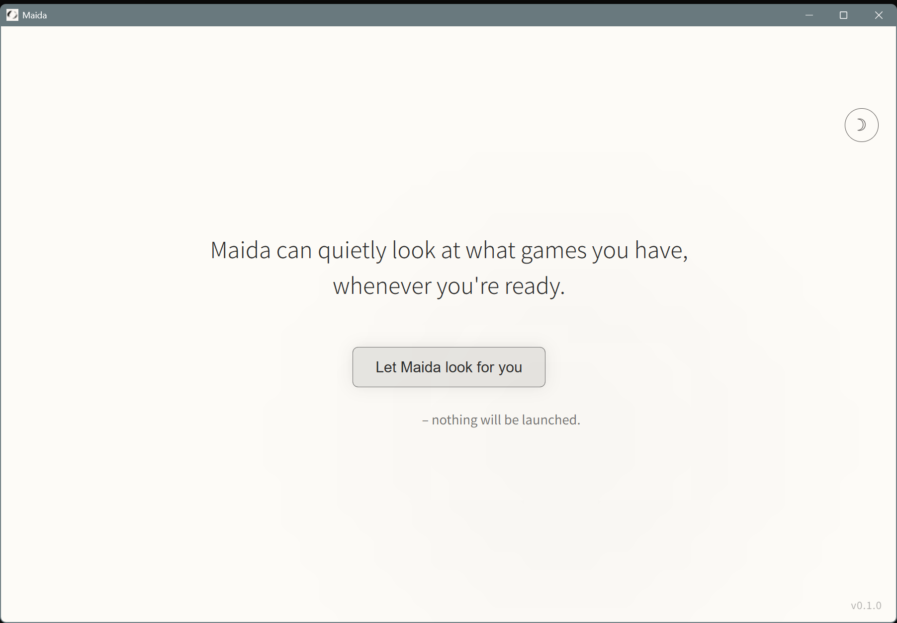
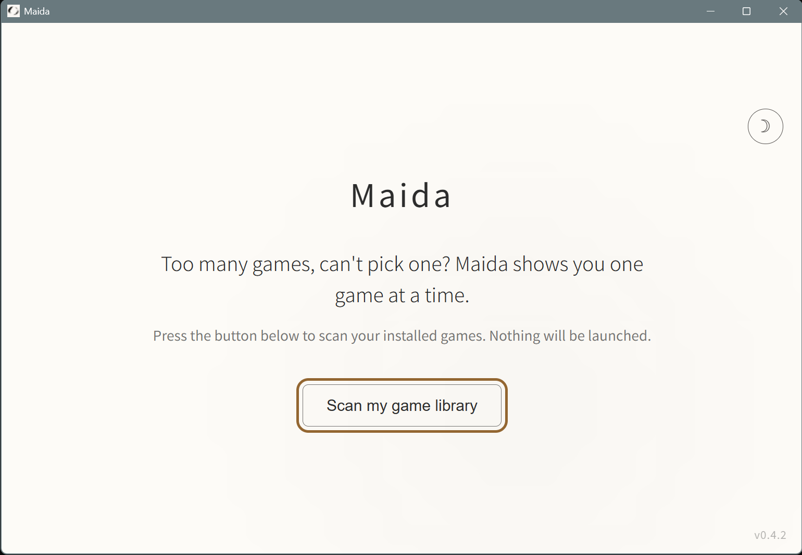
Maida automatically detects your system language (English, Japanese, Simplified Chinese, Traditional Chinese). You can change it later in Settings.Maida はシステムの言語設定を自動検出します（英語、日本語、簡体字中国語、繁体字中国語）。後から設定で変更できます。Maida 會自動偵測你的系統語言（英文、日文、簡體中文、繁體中文）。你可以之後在設定中更改。Maida 会自动检测你的系统语言（英文、日文、简体中文、繁体中文）。你可以之后在设置中更改。
Guided tourガイドツアー引導導覽引导导览
When you first enter Rin, look for the ? button in the top-right corner. Press it (or press F1) to start a guided tour.臨に初めて入ると、右上に ? ボタンがあります。それを押す（または F1 を押す）とガイドツアーが始まります。第一次進入臨時，注意右上角的 ? 按鈕。點擊它（或按 F1）可以啟動引導導覽。第一次进入临时，注意右上角的 ? 按钮。点击它（或按 F1）可以启动引导导览。
The tour covers: what the game title and prescription mean, how TRY and Not Now work, how to switch to Kamae mode, how to manage katas and games, how to switch back to Rin. The tour is available any time — press ? or F1 whenever you need a refresher.ツアーの内容：ゲームタイトルと処方箋の意味、「やる」と「パス」の仕組み、構への切替方法、構での型とゲームの管理方法、臨への切替方法。いつでも利用できます。導覽內容：遊戲標題與處方籤的意思、「試試」與「現在不要」的運作方式、如何切換到構模式、如何在構中管理型與遊戲、如何切換回臨。隨時可用。导览内容：游戏标题与处方签的意思、「试试」与「现在不要」的运作方式、如何切换到构模式、如何在构中管理型与游戏、如何切换回临。随时可用。
Rin (臨) — fast decision臨（Rin）：即時の決断臨（Rin）：快速決策临（Rin）：快速决策
You'll see: a game title, a short reflection (called a "prescription"), and two buttons — TRY and Not Now.表示されるもの：ゲームタイトル、短い省察（「処方箋」と呼ばれる）、そして 2 つのボタン（「やる」と「パス」）。你會看到：遊戲標題、一句反思（稱為「處方籤」），以及兩個按鈕：「試試」和「現在不要」。你会看到：游戏标题、一句反思（称为「处方签」），以及两个按钮：「试试」和「现在不要」。
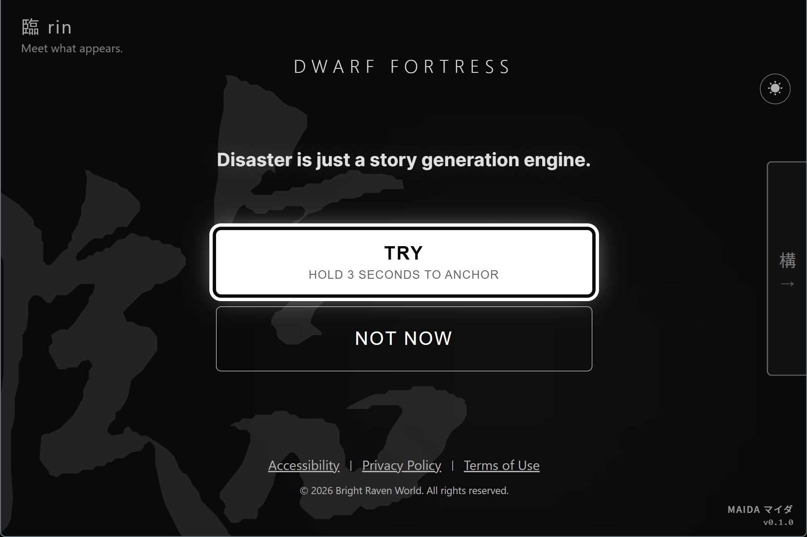
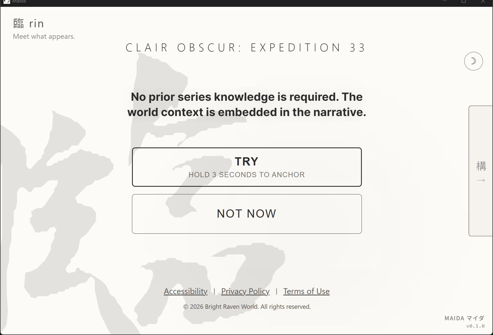
TRYやる試試试试
If you're willing to play this game right now, tap TRY. The game launches immediately, Maida remembers you picked this (weight +1), and the screen enters freeze state.今このゲームをプレイしてもいいなら、「やる」をタップします。ゲームがすぐに起動し、Maida はあなたの選択を記憶し（重み +1）、画面がフリーズ状態になります。如果你現在願意玩這款遊戲，點擊試試。遊戲立即啟動，Maida 記住你選擇了這款遊戲（權重 +1），畫面進入凍結狀態。如果你现在愿意玩这款游戏，点击试试。游戏立即启动，Maida 记住你选择了这款游戏（权重 +1），画面进入冻结状态。
Not Nowパス現在不要现在不要
If you don't want this game right now, tap Not Now. A different game appears, and this game won't appear again in the current session. Games you repeatedly refuse appear much less often.今プレイしたくないなら、「パス」をタップします。別のゲームが表示され、このゲームは今回のセッションでは表示されなくなります。繰り返しパスしたゲームは出現頻度が大幅に下がります。如果你現在不想玩這款遊戲，點擊現在不要。顯示下一款遊戲，這款遊戲在本次 session 中不會再出現。重複拒絕的遊戲會越來越少出現。如果你现在不想玩这款游戏，点击现在不要。显示下一款游戏，这款游戏在本次 session 中不会再出现。重复拒绝的游戏会越来越少出现。
Kamae (構) — curation構（Kamae）：キュレーション構（Kamae）：策展管理构（Kamae）：策展管理
Press the switch button on the right edge of Rin, or press Ctrl+Tab / RB to enter Kamae. In Kamae you can browse games in your showcase, search installed games and add them, and create/manage Katas.臨の画面右端の切替ボタンをタップするか、Ctrl+Tab / RB を押すと構に入ります。構ではショーケースのゲームを閲覧、インストール済みゲームを検索して追加、型の作成と管理ができます。從臨的畫面點擊右側邊緣的切換按鈕，或按 Ctrl+Tab / RB 進入構。在構裡你可以瀏覽展示櫃、搜尋並加入已安裝遊戲、建立和管理「型」。从临的画面点击右侧边缘的切换按钮，或按 Ctrl+Tab / RB 进入构。在构里你可以浏览展示柜、搜索并加入已安装游戏、建立和管理「型」。
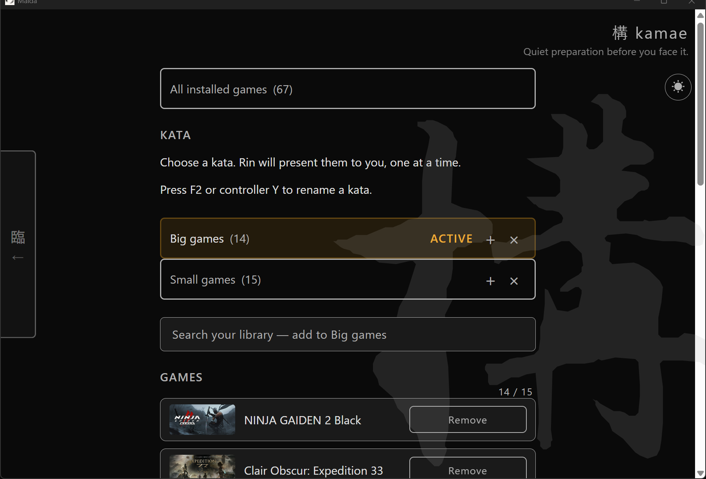
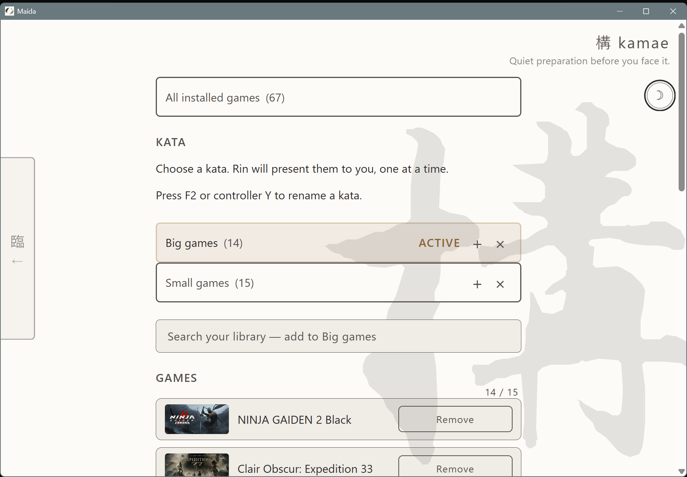
Kata (型)型（Kata）型（Kata）型（Kata）
Kata are named sub-groups within your showcase. Create them by mood or theme.型はショーケース内の名前付きサブグループです。気分やテーマごとに作成できます。型是展示櫃的子分組。你可以依照心情或主題建立不同的型。型是展示柜的子分组。你可以依照心情或主题建立不同的型。
- Up to 2 katas (each holds up to 15 games)最大 2 つの型（各型最大 15 ゲーム）最多建立 2 個型（每個最多 15 款遊戲）最多建立 2 个型（每个最多 15 款游戏）
- In Rin, the dice only rolls from the active kata臨では、ダイスはアクティブな型からのみ選びます在臨面中，骰子只會從啟用中的型裡挑選在临面中，骰子只会从启用中的型里挑选
- Select "All Games" to roll from the entire showcase「全ゲーム」を選ぶとショーケース全体から選びます選擇「全部遊戲」則從整個展示櫃挑選选择「全部游戏」则从整个展示柜挑选
- Press F2 or controller Y to rename a kataF2 キーまたはコントローラーの Y で型の名前を変更できます按 F2 或手把 Y 鍵重新命名型按 F2 或手柄 Y 键重命名型
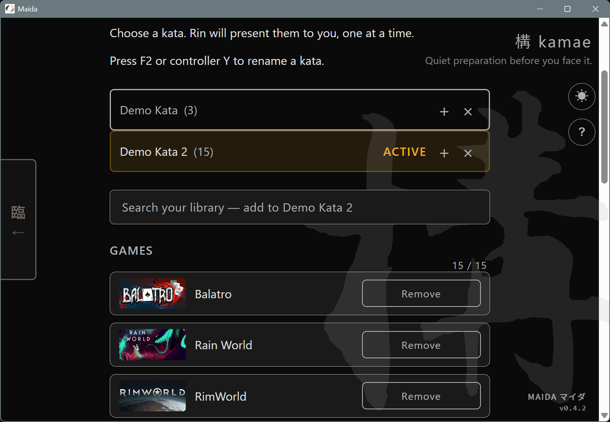

Kata operations型の操作型的操作型的操作
| Action操作操作操作 | Method方法方法方法 |
|---|---|
| Create kata型を作成建立型建立型 | Press the "new kata" button「新しい型」ボタンを押す按「新增型」按鈕按「新增型」按钮 |
| Delete kata型を削除刪除型删除型 | Tap "x" button (confirm twice)「x」ボタンをタップ（2 回確認）點擊「x」按鈕（需確認兩次）点击「x」按钮（需确认两次） |
| Rename名前変更重新命名重命名 | Press F2 or controller YF2 またはコントローラーの Y按 F2 或手把 Y按 F2 或手柄 Y |
| Add gameゲーム追加加入遊戲加入游戏 | Click "+" and tick the games to add, or search by name in the bar below「+」をタップしてチェックボックスでゲームを選ぶ、または下の検索バーで名前から検索點擊「+」後用勾選框選遊戲，或用下方搜尋框按名稱搜尋点击「+」后用勾选框选游戏，或用下方搜索框按名称搜索 |
| Remove gameゲーム削除移除遊戲移除游戏 | Press "Remove"; the button changes to "Confirm?", press again to confirm. Or hold "Remove" for 2.5 seconds.「外す」を押す。ボタンが「確認？」に変わったらもう一度押して確定。または「外す」を 2.5 秒長押し。按「移除」，按鈕變成「確定？」後再按一次確認。或長按「移除」2.5 秒。按「移除」，按钮变成「确定？」后再按一次确认。或长按「移除」2.5 秒。 |
Search in Kamae構内の検索構面的搜尋构面的搜索
If your library is large, use search in Kamae to find specific games quickly.ライブラリが大きい場合は、構内の検索で特定のゲームをすばやく見つけられます。如果你的遊戲庫很大，可以在構面中使用搜尋快速找到特定遊戲。如果你的游戏库很大，可以在构面中使用搜索快速找到特定游戏。
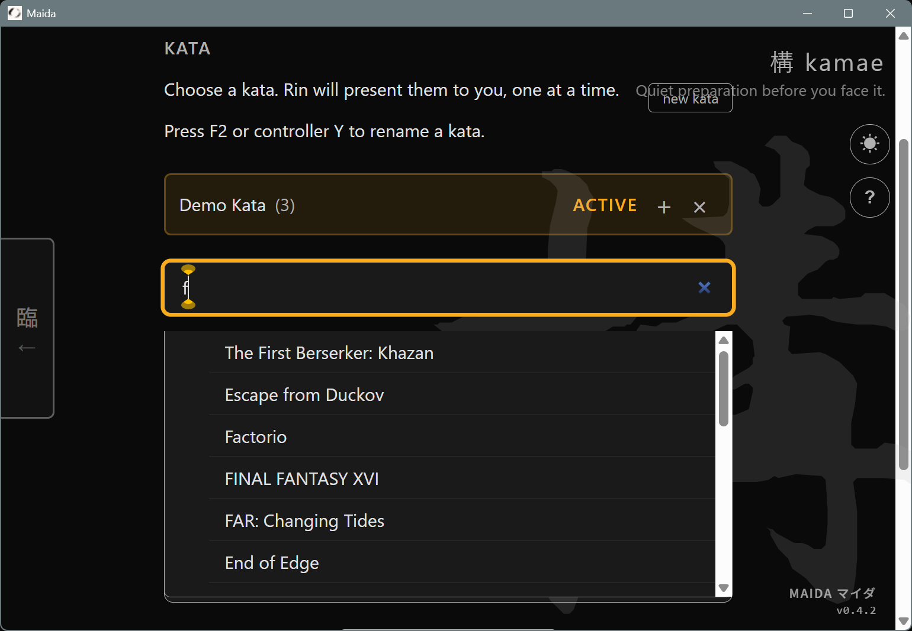
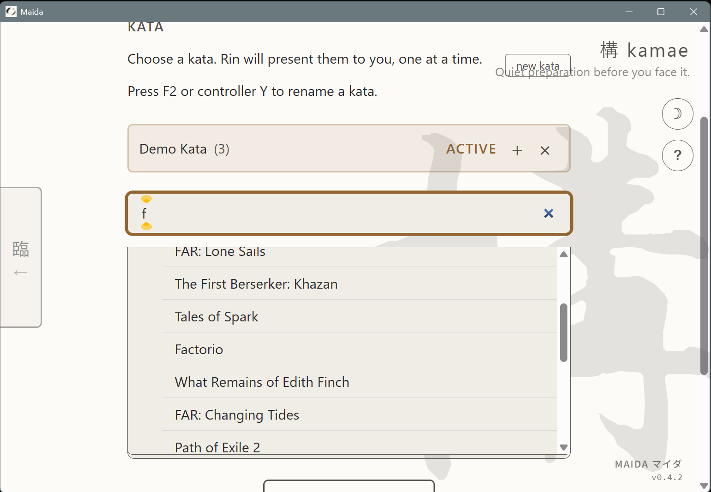
That's literally it. You don't need to know anything else to use Maida. Everything below is advanced. 本当にこれだけです。Maida を使うために他に知る必要はありません。以下はすべて応用です。 這樣就夠了。使用 Maida 不需要知道更多。以下都是進階功能。 这样就够了。使用 Maida 不需要知道更多。以下都是进阶功能。
Anchoring (advanced)アンカー（応用）錨定（進階）锚定（进阶）
Sometimes you want to decide now but play later. Hold the TRY button for 3 seconds.今決めたいけど、後でプレイしたい場合。「やる」ボタンを 3 秒間長押しします。有時候你想先決定，但稍後再玩。長按「試試」按鈕 3 秒。有时候你想先决定，但稍后再玩。长按「试试」按钮 3 秒。
- The game gets "anchored" to the screenゲームが画面に「アンカー」されます遊戲被「錨定」在畫面上游戏被「锚定」在画面上
- TRY becomes PLAY「やる」が 「プレイ」 に変わります「試試」按鈕變成「開打」「试试」按钮变成「开打」
- Not Now becomes Clear「パス」が 「解除」 に変わります「現在不要」按鈕變成「清除」「现在不要」按钮变成「清除」
- Next time you open Maida, this game is still here次回 Maida を開いても、このゲームがまだここにあります下次開啟 Maida 時，這款遊戲仍然在這裡下次打开 Maida 时，这款游戏仍然在这里
Changed your mind? Tap Clear.気が変わりましたか？ 「解除」をタップしてください。改主意了？點擊「清除」即可。改主意了？点击「清除」即可。
Undo (advanced)元に戻す（応用）復原（進階）撤销（进阶）
Made a mistake? Tap Undo (One Time Only) at the bottom. Goes back one step. Works once per decision.間違えましたか？ 画面下部の「元に戻す（一回限り）」ボタンをタップします。1 ステップ戻ります。決定ごとに 1 回だけ。做錯了？點擊畫面底部的「復原（僅限一次）」按鈕。回到上一步。但每次決定只能用一次。做错了？点击画面底部的「撤销（仅限一次）」按钮。回到上一步。但每次决定只能用一次。
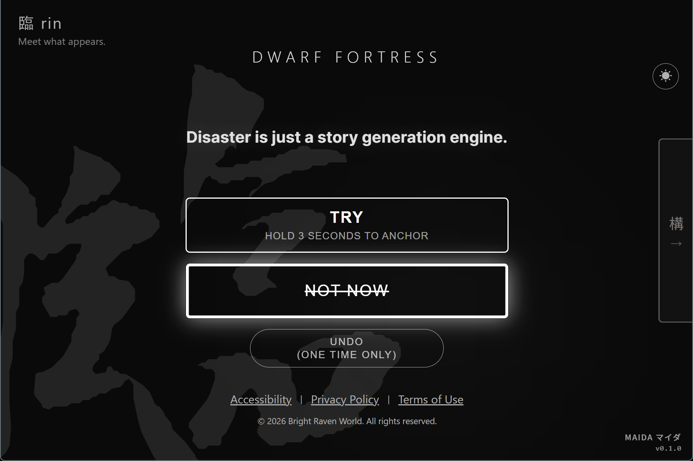

Note: Undo brings the game back on screen, but the −2 weight penalty is not reversed. The score recovers naturally via daily decay (~1 week).注意：元に戻すとゲームは画面に再表示されますが、−2 の重みペナルティは復元されません。スコアは毎日の減衰により約 1 週間で自然回復します。注意：復原會讓遊戲重新出現在畫面上，但 −2 的權重扣分不會恢復。分數會在約一週內透過每日衰減自然恢復。注意：撤销会让游戏重新出现在画面上，但 −2 的权重扣分不会恢复。分数会在约一周内通过每日衰减自然恢复。
Freeze stateフリーズ状態凍結狀態冻结状态
After you tap TRY or PLAY to launch a game, Maida enters freeze state. You've made a commitment; the system stops showing new options; your decision is protected from interference.「やる」または「プレイ」をタップしてゲームを起動した後、Maida はフリーズ状態になります。コミットしました。システムは新しい選択肢を表示しません。あなたの決定を干渉から守ります。點擊「試試」或「開打」啟動遊戲後，Maida 進入凍結狀態。你已經做出承諾，系統停止顯示新選項，保護你的決定不被其他選擇干擾。点击「试试」或「开打」启动游戏后，Maida 进入冻结状态。你已经做出承诺，系统停止显示新选项，保护你的决定不被其他选择干扰。
This isn't pause — it's protecting your focus. これは一時停止ではなく、集中を守ることです。 這不是暫停，是保護你的專注。 这不是暂停，是保护你的专注。
How to unfreeze?フリーズを解除するには？如何解除凍結？如何解除冻结？
After playing, return to Maida and tap I'M BACK. The button activates after a cool-down period (default 15 seconds, adjustable in Settings → Accessibility → Cool-down duration, 5–30 seconds). This prevents accidental double-tap.プレイ後、Maida に戻って「再開」をタップします。クールダウン時間が経過してからボタンが有効になります（デフォルト 15 秒、設定 → アクセシビリティ → クールダウン時間で 5〜30 秒に調整可能）。誤操作防止のためです。遊戲結束後，回到 Maida，點擊「再來一次」。按鈕會在休息時間後才啟用（預設 15 秒，可在設定 → 無障礙 → 休息秒數調整為 5 至 30 秒），防止意外連按。游戏结束后，回到 Maida，点击「再来一次」。按钮会在休息时间后才启用（默认 15 秒，可在设置 → 无障碍 → 休息秒数调整为 5 至 30 秒），防止意外连按。
How Maida picks gamesMaida がゲームを選ぶ仕組みMaida 如何挑選遊戲Maida 如何挑选游戏
Maida adjusts what appears based on your past choices. It's not recommending — it honestly reflects where your intention is leaning.Maida はこれまでの選択に応じて表示を調整します。レコメンドではなく、あなたの意図がどこに傾いているかを正直に反映するだけです。Maida 會根據你過去的選擇調整顯示。這不是推薦，只是誠實地反映你的選擇傾向。Maida 会根据你过去的选择调整显示。这不是推荐，只是诚实地反映你的选择倾向。
Keyboard & gamepad controlsキーボードとゲームパッド操作鍵盤與手把操作键盘与手柄操作
Navigation (all modes)ナビゲーション（全モード）導覽（所有模式）导览（所有模式）
| Action操作操作操作 | Keyboardキーボード鍵盤键盘 | Gamepadゲームパッド手把手柄 |
|---|---|---|
| Move focusフォーカス移動移動焦點移动焦点 | Arrow keys or Tab矢印キーまたは Tab方向鍵或 Tab方向键或 Tab | D-pad or left stickD-pad または左スティックD-pad 或左類比搖桿D-pad 或左摇杆 |
| Scroll long pages長いページのスクロール捲動長頁面滚动长页面 | Page Up/DownPage Up/DownPage Up/DownPage Up/Down | Right stick, or D-pad up/down on legal pages右スティック、または法律ページでは D-pad 上下右類比搖桿，或在法律頁面可用 D-pad 上下右摇杆，或在法律页面可用 D-pad 上下 |
Rin mode臨（Rin）モード臨模式临模式
| Action操作操作操作 | Keyboardキーボード鍵盤键盘 | Gamepadゲームパッド手把手柄 |
|---|---|---|
| TRYやる試試试试 | Enter | A |
| Not Nowパス現在不要现在不要 | Enter | A |
| Anchorアンカー錨定锚定 | Hold Enter 3sEnter 3 秒長押し長按 Enter 3 秒长按 Enter 3 秒 | Hold A 3sA 3 秒長押し長按 A 3 秒长按 A 3 秒 |
| Undo元に戻す復原撤销 | Enter | A |
| Switch to Kamae構に切替切換到構切换到构 | Ctrl+Tab | RB |
Kamae mode構（Kamae）モード構模式构模式
| Action操作操作操作 | Keyboardキーボード鍵盤键盘 | Gamepadゲームパッド手把手柄 |
|---|---|---|
| Select kata型を選択選擇型选择型 | Enter | A |
| Rename kata型の名前変更重新命名型重命名型 | F2 | Y |
| Delete kata型を削除刪除型删除型 | x button (twice)x ボタン（2 回）x 按鈕（按兩次）x 按钮（按两次） | A on x (twice)x で A（2 回）x 上按 A（兩次）x 上按 A（两次） |
| Remove gameゲーム削除移除遊戲移除游戏 | Hold Enter 2.5s, or Enter then Enter on "Confirm?"Enter 2.5 秒長押し、または Enter を押して「確認？」でもう一度 Enter長按 Enter 2.5 秒，或 Enter 後在「確定？」再按 Enter长按 Enter 2.5 秒，或 Enter 后在「确定？」再按 Enter | Hold A 2.5s, or A then A on "Confirm?"A 2.5 秒長押し、または A を押して「確認？」でもう一度 A長按 A 2.5 秒，或 A 後在「確定？」再按 A长按 A 2.5 秒，或 A 后在「确定？」再按 A |
| Switch to Rin臨に切替切換到臨切换到临 | Ctrl+Tab | LB |
| Settings設定設定设置 | Enter | A |
General共通通用通用
| Action操作操作操作 | Keyboardキーボード鍵盤键盘 | Gamepadゲームパッド手把手柄 |
|---|---|---|
| Switch light/darkライト/ダーク切替切換淺色/深色切换浅色/深色 | Click top-right button右上ボタン右上角按鈕右上角按钮 | D-pad + A |
| Help / Tourヘルプ／ツアー說明／導覽帮助／导览 | F1 or ? buttonF1 または ? ボタンF1 或 ? 按鈕F1 或 ? 按钮 | — |
| Back戻る返回返回 | Escape | B |
NVDA screen reader supported (Windows). On Linux, Orca support is limited due to WebKitGTK constraints.NVDA スクリーンリーダー対応（Windows）。Linux では、WebKitGTK の制約により Orca の対応は限定的です。支援 NVDA 螢幕閱讀器（Windows）。Linux 上由於 WebKitGTK 限制，Orca 支援有限。支持 NVDA 屏幕阅读器（Windows）。Linux 上由于 WebKitGTK 限制，Orca 支援有限。
Settings設定設定设置
In Kamae, tap "Settings". Each section can be expanded by tapping its title.構で「設定」をタップします。各セクションはタイトルをタップすると展開できます。在構面中點擊「設定」。每個區塊都可以點擊標題展開。在构面中点击「设置」。每个区块都可以点击标题展开。
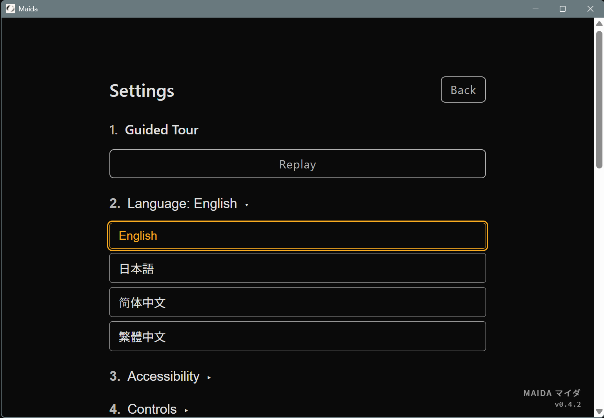
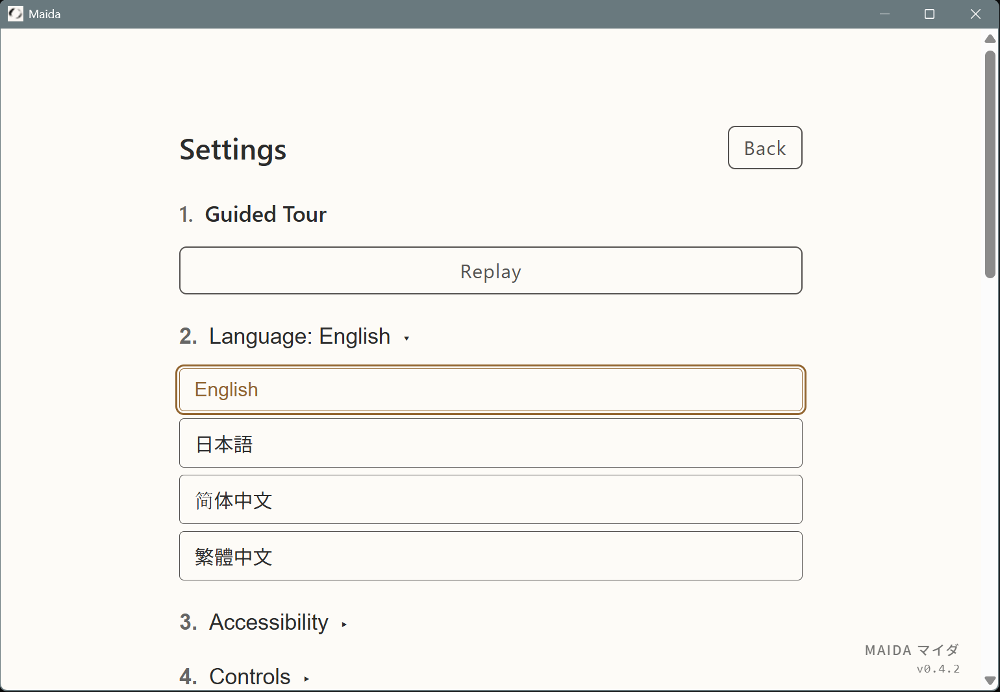
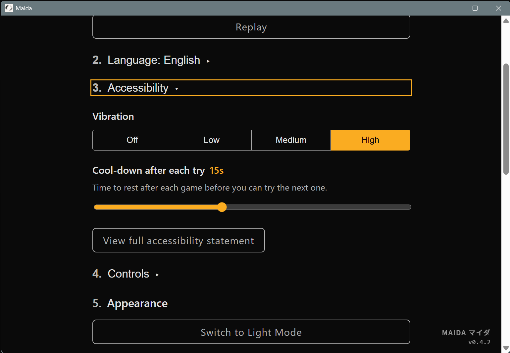
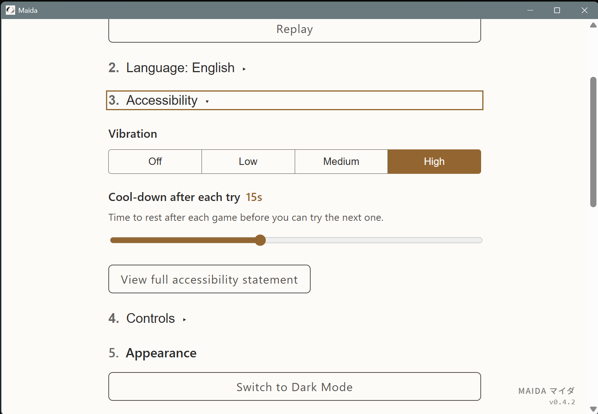
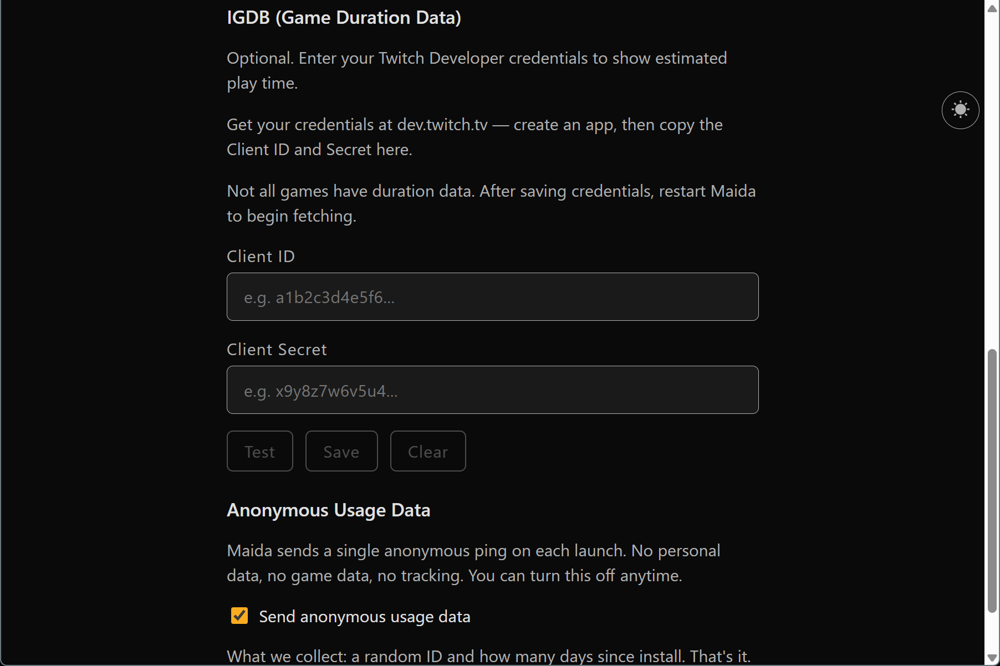
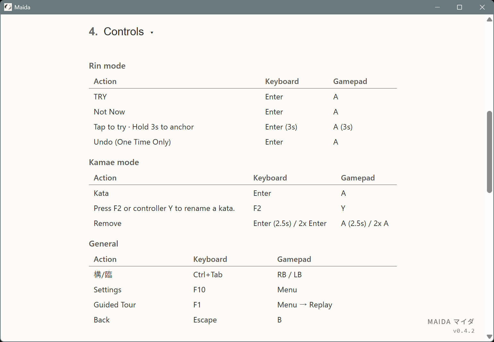
- Language言語語言语言 — Choose from English, Japanese, Simplified Chinese, or Traditional Chinese. Select a language, then press again to confirm.：英語、日本語、簡体字中国語、繁体字中国語から選択。言語を選んだ後、もう一度押して確定します。：選擇英文、日文、簡體中文或繁體中文。選擇語言後再按一次確認。：选择英文、日文、简体中文或繁体中文。选择语言后再按一次确认。
- Accessibilityアクセシビリティ無障礙无障碍 — expandable section with three preferences:：展開セクション、3 つの設定を含みます：：展開區塊含三項偏好設定：：展开区块含三项偏好设置：
- Haptic feedback振動フィードバック震動回饋振动回馈: Off / Low / Medium / High. Changes apply immediately. (Gamepad only)：オフ / 弱 / 中 / 強。変更は即座に反映されます。（ゲームパッドのみ）：關閉 / 低 / 中 / 高。變更立即生效。（僅手把）：关闭 / 低 / 中 / 高。变更立即生效。（仅手柄）
- Cool-down durationクールダウン時間休息秒數休息秒数: how long the post-TRY rest screen stays before "I'M BACK" activates. Slide between 5 and 30 seconds (default 15s). Value persists across launches.：「やる」後に「再開」ボタンが有効になるまでの休憩時間。5〜30 秒のスライダー（デフォルト 15 秒）。値は起動を跨いで保存されます。：試試後「再來一次」按鈕啟用前的休息時間。5 到 30 秒的滑桿（預設 15 秒）。數值會跨啟動持續保留。：试试后「再来一次」按钮启用前的休息时间。5 到 30 秒的滑杆（默认 15 秒）。数值会跨启动持续保留。
- View full Accessibility statementアクセシビリティ声明を表示查看完整無障礙聲明查看完整无障碍声明: opens the accessibility policy page.：アクセシビリティポリシーページを開きます。：開啟無障礙政策頁面。：打开无障碍政策页面。
- Controls操作方法操控說明操控说明 — Full list of keyboard and gamepad shortcuts.：キーボードとゲームパッドのショートカット一覧。：完整的鍵盤與手把快捷鍵列表。：完整的键盘与手柄快捷键列表。
- Themeテーマ主題主题 — Toggle light/dark mode.：ライト/ダークモードの切り替え。：切換淺色/深色模式。：切换浅色/深色模式。
- IGDB Game DurationIGDB ゲーム時間データIGDB 遊戲時長資料IGDB 游戏时长数据 — Optional. Enter Twitch Developer credentials to show estimated play time below game titles.：任意。Twitch Developer の認証情報を入力すると、ゲームタイトルの下に推定プレイ時間が表示されます。：選填。輸入 Twitch Developer 憑證後，遊戲標題下方會顯示預估遊玩時長。：选填。输入 Twitch Developer 凭证后，游戏标题下方会显示预估游玩时长。
- Anonymous Usage Data匿名利用データ匿名使用數據匿名使用数据 — Each launch sends a small anonymous signal (random ID + install day count + version). Toggle off anytime. See the Privacy Policy for details.：起動ごとに小さな匿名シグナル（ランダム ID・インストール日数・バージョン）を送信。いつでもオフにできます。詳細は プライバシーポリシー を参照。：每次啟動時發送一個小型匿名訊號（隨機 ID、安裝天數、版本號）。可隨時關閉。詳見隱私政策。：每次启动时发送一个小型匿名信号（随机 ID、安装天数、版本号）。可随时关闭。详见隐私政策。
Common questionsよくある質問常見問題常见问题
Why do I keep seeing the same game?同じゲームが繰り返し表示されるのはなぜ？為什麼一直出現同一款遊戲？为什么一直出现同一款游戏？
You've chosen TRY multiple times before. Maida doesn't track playtime — only your choices. Tap Not Now if you're done with it.以前に「やる」を複数回選んだからです。Maida はプレイ時間を追跡しません。選択のみを記録します。もう見たくなければ「パス」を選んでください。你之前多次選擇了「試試」。Maida 不追蹤遊玩時間，只記錄你的選擇。如果不想再看到，選「現在不要」。你之前多次选择了「试试」。Maida 不追踪游玩时间，只记录你的选择。如果不想再看到，选「现在不要」。
Can I search for a specific game?特定のゲームを検索できますか？可以搜尋特定遊戲嗎？可以搜索特定游戏吗？
In Kamae, yes — search and add to your showcase. In Rin, no — that's the dice's job.構では可能です。検索してショーケースに追加できます。臨では不可。それはダイスの仕事です。在構面中可以搜尋並加入展示櫃。在臨面中不行，那是骰子的工作。在构面中可以搜索并加入展示柜。在临面中不行，那是骰子的工作。
Does it track how long I play?プレイ時間を追跡しますか？追蹤遊玩時間嗎？追踪游玩时间吗？
No. It only knows whether you chose TRY or Not Now.いいえ。「やる」か「パス」かの選択のみです。不會。只知道你選了「試試」還是「現在不要」。不会。只知道你选了「试试」还是「现在不要」。
Is my data uploaded anywhere?データはどこかにアップロードされますか？資料會上傳嗎？数据会上传吗？
No. All data stays on your device.いいえ。すべてのデータはデバイス上に保存されます。不會。所有資料存在你的裝置上。不会。所有数据存在你的设备上。
Troubleshootingトラブルシューティング疑難排解疑难排解
"Steam Not Detected"「Steam が検出されません」「偵測不到 Steam」「检测不到 Steam」
Steam isn't running. Start Steam, then retry.Steam が起動していません。Steam を起動してから再試行してください。Steam 沒在執行。啟動 Steam 後重試。Steam 没在运行。启动 Steam 后重试。
Button doesn't respondボタンが反応しない按鈕沒反應按钮没反应
You might be pressing in the "dead zone" (not quick enough, not long enough). Either tap quickly or hold firmly for 3+ seconds.「デッドゾーン」で押している可能性があります。素早くタップするか、3 秒以上しっかり長押ししてください。可能按在「死區」裡（不夠快也不夠久）。快速點擊，或長按超過 3 秒。可能按在「死区」里（不够快也不够久）。快速点击，或长按超过 3 秒。
Windows says "This app might be unsafe"Windows が「このアプリは安全ではない可能性があります」と表示するWindows 說「這個應用程式可能不安全」Windows 说「这个应用程序可能不安全」
Click "More info" then "Run anyway". Maida is free software without a paid certificate. It's safe.「詳細情報」→「実行」をクリック。Maida は有料証明書のない無料ソフトウェアです。安全です。點擊「其他資訊」→「仍要執行」。Maida 是沒有付費憑證的免費軟體，是安全的。点击「其他信息」→「仍要运行」。Maida 是没有付费凭证的免费软件，是安全的。
Game didn't launchゲームが起動しない遊戲沒有啟動游戏没有启动
Check if Steam can launch the game normally. Some games need manual setup before first launch.Steam が通常そのゲームを起動できるか確認してください。一部のゲームは初回起動前に手動セットアップが必要です。確認 Steam 能正常啟動該遊戲。某些遊戲需要首次手動設定。确认 Steam 能正常启动该游戏。某些游戏需要首次手动设置。
Design philosophy (if you're curious)設計思想（興味があれば）設計理念（有興趣的話）设计理念（有兴趣的话）
Most game launchers help you browse. Browsing your library creates decision fatigue. Maida removes browsing entirely. One game. One choice. Move on.ほとんどのゲームランチャーは閲覧を支援します。ライブラリの閲覧は決定疲労を引き起こします。Maida は閲覧を完全に排除します。1 つのゲーム。1 つの選択。前に進む。大多數遊戲啟動器幫你瀏覽。瀏覽你的遊戲庫會產生決策疲勞。Maida 完全移除瀏覽。一款遊戲。一個選擇。繼續前進。大多数游戏启动器帮你浏览。浏览你的游戏库会产生决策疲劳。Maida 完全移除浏览。一款游戏。一个选择。继续前进。
maida is the space you pass through before you begin.